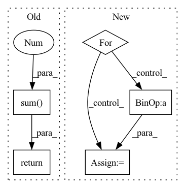

Pattern ID :3326

Before Change
if self.average:
distance = distance.mean(0)
else:
distance = distance.sum(0)
return distance
After Change
stfts_y = self.multiscale_stft(y)
distance = 0.
for x, y in zip(stfts_x, stfts_y):
distance = distance + lin_distance(x, y) + log_distance(x, y)
@gin.register
In pattern: SUPERPATTERN
Frequency: 3
Non-data size: 5
Instances
Fragment ID: 17240215
Project Name: caillonantoine/rave
Commit Name: c57a98c5145db1f44c6e5c540989494f696502ca
Time: 2022-11-05
Author: caillon@ircam.fr
File Name: rave/core.py
M Class Name: AudioDistance
N Class Name: AudioDistanceV1
M Method Name: forward(3)
N Method Name: forward(3)
M Parent Class: nn.Module
N Parent Class: nn.Module
M File Name: rave/core.py
N File Name: rave/core.py
M Start Line: 284
M End Line: 296
N Start Line: 276
N End Line: 284
'>
Before Change
if self.average:
distance = distance.mean(0)
else:
distance = distance.sum(0)
return distance
After Change
stfts_y = self.multiscale_stft(y)
distance = 0.
for x, y in zip(stfts_x, stfts_y):
distance = distance + lin_distance(x, y) + log_distance(x, y)
@gin.register
'>
Fragment ID: 17240214
Project Name: caillonantoine/rave
Commit Name: c57a98c5145db1f44c6e5c540989494f696502ca
Time: 2022-11-05
Author: caillon@ircam.fr
File Name: rave/core.py
M Class Name: AudioDistance
N Class Name: AudioDistanceV1
M Method Name: forward(3)
N Method Name: forward(3)
M Parent Class: nn.Module
N Parent Class: nn.Module
M File Name: rave/core.py
N File Name: rave/core.py
M Start Line: 284
M End Line: 296
N Start Line: 276
N End Line: 284
'>
Before Change
print(sample[..., None].shape)
print(self._codebook[:, None, None, ...].shape)
exit()
return (sample[..., None] * self._codebook[:, None, None, ...]).sum(-2)
class _quantizerEncoder(nn.Module):
After Change
return torch.einsum("nmhwk,mkd->nmhwd", sample, self._codebook).permute(0, 1, 4, 2, 3).reshape(n, -1, h, w)
quantizeds = list()
for i in range(len(self._codebook)):
// [n, h, w, k]
oneHot = sample[:, i]
// [n, h, w, k] @ [k, d] -> [n, h, w, d]
quantized = oneHot @ self._codebook[i]
quantizeds.append(quantized)
// m * [n, h, w, d] -> [n, h, w, c] -> [n, c, h, w]
return torch.cat(quantizeds, -1).permute(0, 3, 1, 2)
'>
Fragment ID: 17240216
Project Name: xiaosu-zhu/mcquic
Commit Name: e36abadfbaa15ca5f2208734c7a8c25586153013
Time: 2022-01-07
Author: xiaosu.zhu@outlook.com
File Name: src/mcqc/models/quantizer.py
M Class Name: _multiCodebookDeQuantization
N Class Name: _multiCodebookDeQuantization
M Method Name: forward(2)
N Method Name: forward(2)
M Parent Class: nn.Module
N Parent Class: nn.Module
M File Name: src/mcqc/models/quantizer.py
N File Name: src/mcqc/models/quantizer.py
M Start Line: 130
M End Line: 133
N Start Line: 156
N End Line: 164